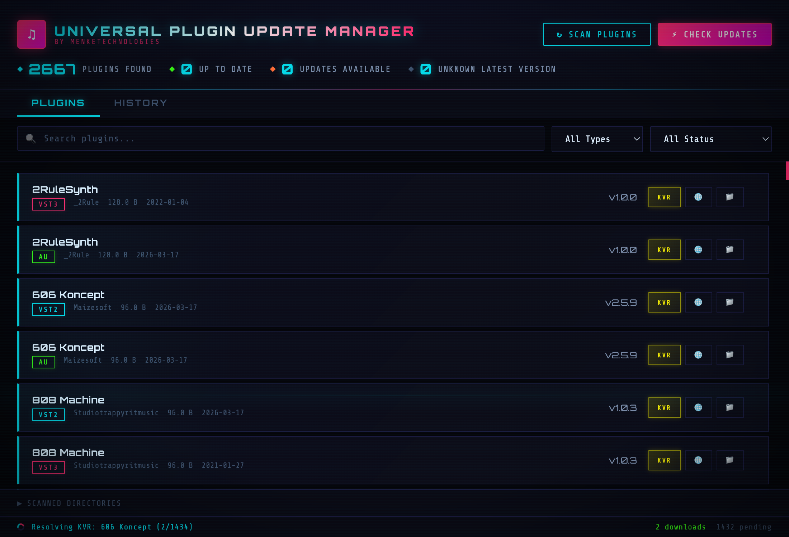
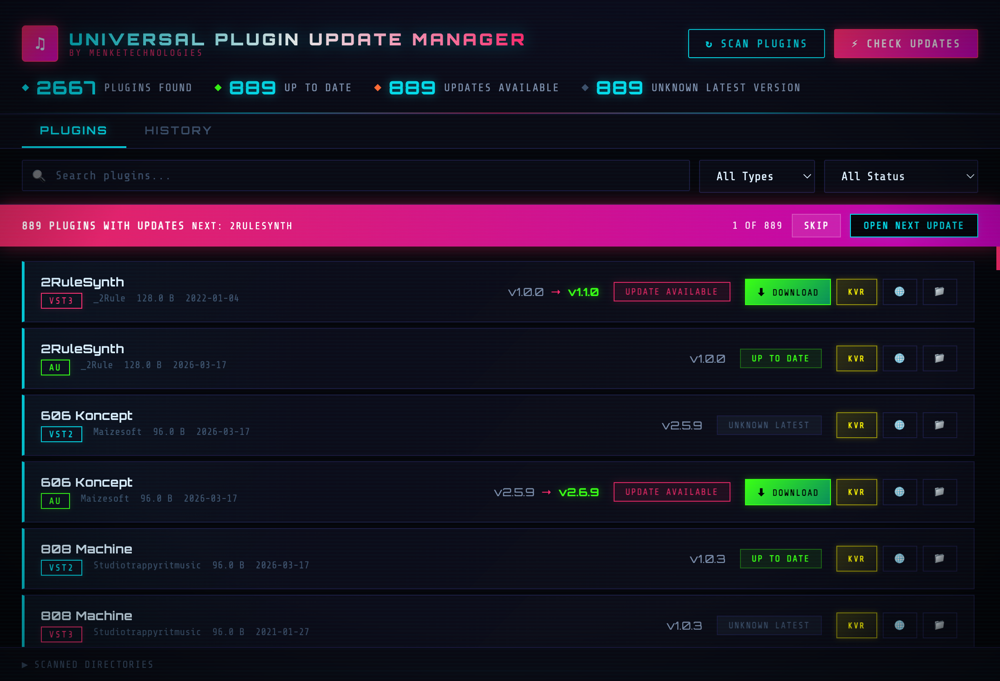
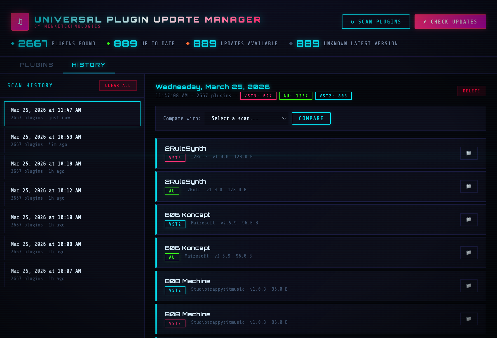

A high-voltage Tauri v2 desktop app for scanning, managing, and updating audio plugins, samples, DAW projects, and presets. Cyberpunk CRT interface. Rust-powered backend.
Everything you need to manage your audio production ecosystem.
Scans VST2, VST3, and AU plugins from system directories. Shows architecture badges (ARM64, x86_64, Universal). Streams results in real-time.
Discovers WAV, FLAC, AIFF, MP3, OGG samples with metadata. Click to play with waveform preview and BPM estimation. Seekable waveform in metadata panel and floating player.
Finds projects across 14+ DAW formats. Double-click to open directly in your DAW. Ableton, Logic, FL Studio, REAPER, and more.
Catalogs plugin presets across all formats. Search, filter, and reveal in Finder with a double-click.
All search bars use fzf-style scoring with match highlighting. Supports exact ('term), prefix (^term), suffix (term$), and negation (!term).
Right-click any item to add to favorites. Dedicated Favorites tab with type filtering and search. Persisted across sessions.
Checks KVR Audio for the latest version of each plugin. Downloads available. Results cached for instant restarts.
Export any tab to JSON, TOML, CSV, TSV, or PDF. Import from JSON or TOML. Native file dialogs with format selection.
Stores up to 50 scan snapshots. Diff any two to see plugins added, removed, or version-changed.
Multiple color schemes with CRT scanline overlay. Custom schemes with 17 configurable colors. Light mode included.
Draggable audio player docks to any corner. Volume, speed, loop, seek bar. Expanded mode adds 3-band EQ, preamp gain, stereo pan, mono toggle, A-B loop, and 50-track history.
All filter dropdowns support multiple selections. Type keywords to auto-activate filters. Drag tabs to reorder.
Full menu bar: File, Edit, Scan, View, Playback, Data, Window, Help. All actions with keyboard accelerators. Standard macOS conventions.
Export any tab to PDF (A4 landscape, auto-paginated). Also supports JSON, TOML, CSV, TSV. Import from JSON or TOML.
Stacked bar charts showing storage breakdown by format/type per tab. Color-coded legends with percentages and sizes.
Estimated time remaining on scans and update checks. Countdown for known totals, elapsed timer for discovery scans.
Checkbox selection for multi-item operations. Duplicate detection by name+size across all tabs. Batch favorite, copy, export.
Right-click any item to add notes and tags. Persisted in preferences. Note indicator icons on annotated items.
Press Cmd+K to fuzzy search across all items — plugins, samples, DAW projects, presets, directories, tags, and actions. Arrow keys to navigate, Enter to jump.
Parses Ableton (.als) and REAPER (.rpp) projects to extract plugin references. See which plugins each project uses, or find which projects use a given plugin.
Bookmark favorite directories in the File Browser for instant navigation. Chips displayed above the file list. Right-click any folder to bookmark it.
Estimates tempo for WAV and AIFF samples using onset-strength autocorrelation. Shown in the metadata panel with a loading spinner while computing. Cached in memory. BPM appears in the floating player meta line.
Full-width waveform in the metadata panel when clicking a sample. Seekable — click anywhere to jump. Playback cursor and progress fill update in real-time. Cyan-to-magenta gradient. Peaks cached for instant re-display.
Full filesystem navigation tab with breadcrumb path bar. Browse, tag, and annotate any file or folder. Bookmark directories for instant access. Integrated with the command palette.
Dedicated tab for managing all tags across the app. Rename, delete, filter, and list items per tag. Tag cloud visualization with usage counts. Quick-tag context menus and tag suggestions.
Arrow keys / j/k to navigate table rows. Enter to activate, Space to play samples, Home/End to jump. Visual selection highlight follows focus.
Press ? to show a keyboard shortcuts reference overlay covering navigation, actions, search operators, and mouse interactions.
Last-used sort column and direction saved per tab, restored on app restart. Right-click column headers to sort ascending or descending.
Drag column borders in any table to resize. Widths persist across sessions. Right-click a column header to reset all column widths.
Drag tabs to reorder. Order persisted across sessions. Reset via Settings or right-click the tab bar.
Animated equalizer bars in the expanded floating player with cyan-to-magenta gradient. Bars bounce when playing, freeze on pause. Border glow pulse effect.
Remap any keyboard shortcut in Settings. System tray integration with dashboard. Tab transitions with smooth animations.
Right-click context menus on every interactive element — plugins, samples, DAW projects, presets, columns, search boxes, toolbars, settings, and the floating player.
Slide-in notifications for actions like opening DAW projects, revealing files, bookmarking directories, and export confirmations.
Resolved KVR data persisted to kvr-cache.json. Last scan results + cache auto-load on startup — no re-scanning needed. Background resolver resumes from where it left off.
Shows ARM64, x86_64, or Universal badges per plugin via direct Mach-O/PE header parsing. No subprocess spawning — reads binary headers directly.
Visual plugin dependency map with Most Used, By Project (drill-down), and Orphaned tabs. Search, bar charts, and context menus on all rows.
Right-click any Ableton .als file to decompress and view raw XML. fzf search with highlighted matches and line numbers. Export to .xml.
Search field in audio player (mini and expanded) with fzf fuzzy matching. Searches recently played and entire sample library.
8 configurable fuzzy search parameters in Settings. Tune match scoring, gap penalties, and boundary bonuses with live preview.
30 CSS animations: neon focus pulse, button glow, modal zoom, format badge shimmer, toast glow, neon scrollbars, tactile depth shadows.
File browser has Desktop, Downloads, Music, Documents, and Root buttons. Ableton-style keyboard nav: right enters dir, left goes up.
BPM detection for all formats — MP3, FLAC, OGG, M4A, AAC, OPUS via symphonia decoder. Compressed audio decoded to PCM, then onset-strength autocorrelation.
Visual frequency response curve with draggable band nodes and real-time FFT spectrum at 60fps. Drag to change frequency and gain simultaneously.
38 customizable keybindings. j/k, gg/G, Ctrl+D/U, /search, o reveal, y yank, p play, x fav, v select. All rebindable in Settings.
The cyberpunk CRT interface in action.
Initial state. The grid awaits your scan command. Last scan results auto-load on startup so you're ready instantly. The header shows real-time process stats (CPU, memory, threads, uptime).

Plugins stream into the list in real-time as Rayon worker threads discover them. Progress counter with ETA shows live status. Architecture badges (ARM64, x86_64) per plugin. Hit Stop anytime -- discovered plugins are kept. Resume to continue from where you left off.

KVR Audio check in progress. Cards update incrementally with "Update Available" or "Up to Date" badges. Yellow KVR buttons link to product pages. Green download buttons for outdated plugins. Status bar shows current plugin being checked.

Every scan is timestamped and archived (up to 50 snapshots). Select any two and the diff engine shows plugins added, removed, or version-changed between them. Plugin, audio, DAW, and preset scans are merged in a unified timeline.
Detailed walkthroughs for every major workflow.
Click "Scan Plugins" to discover all VST2, VST3, and Audio Unit plugins. The scanner crawls platform-specific directories (/Library/Audio/Plug-Ins/ on macOS) using parallel Rayon threads. Results stream in real-time -- you see each plugin appear as it's found.
Each plugin card shows architecture badges: ARM64 (Apple Silicon native), x86_64 (Intel), or both. This is detected by reading Mach-O headers directly -- no subprocess spawning. Use the type filter to show only VST3 or Audio Units.
Click "Check Updates" to query KVR Audio for each plugin's latest version. Rate-limited to 2s between plugins (~90 min for 2600 plugins). Cards update in-place with badges: Update Available, Up to Date, or Unknown. Results are cached in kvr-cache.json for instant restarts.
Green Download buttons appear on plugins with confirmed newer versions and a KVR download link. Click to download. Use the Batch Updater to walk through all outdated plugins one by one with skip/open controls.
Go to Settings > Plugin Scan Directories to add custom paths. One path per line. The scanner will crawl these instead of the default system directories. Useful for external drives or non-standard install locations.
Switch to the Samples tab (Cmd+2) and click "Scan Samples". Discovers WAV, FLAC, AIFF, MP3, OGG, M4A, AAC files across your system. Elapsed time shown during scan. Configure custom directories in Settings.
Click any sample row to start playback. The floating audio player appears with: play/pause, loop toggle, seek bar, volume slider (0-100%), and playback speed (0.25x-2x). The player stays visible across all tabs.
Drag the grip dots (mini mode) or toolbar (expanded mode) to move the player. Release to snap it to the nearest corner: top-left, top-right, bottom-left, or bottom-right. Dock position is saved across sessions.
Double-click the player to expand it. The expanded view shows a cyberpunk visualizer (24 animated bars with cyan-to-magenta gradient) and a scrollable Recently Played list (up to 50 tracks). Click any track to replay it.
Click a sample row to expand its metadata panel showing: file name, format, size, full path, sample rate, bit depth, channels, duration, byte rate, and filesystem timestamps (created, modified, accessed).
Click the format dropdown to select multiple formats simultaneously (e.g. WAV + FLAC). Typing a format name in the search box auto-activates the filter. The filter stays sticky until you clear the search.
The DAW scanner finds project files across 14+ formats: Ableton (.als/.alp), Logic (.logicx), FL Studio (.flp), REAPER (.rpp), Cubase/Nuendo (.cpr/.npr), Pro Tools (.ptx/.ptf), Bitwig (.bwproject), Studio One (.song), Reason (.reason), Audacity (.aup/.aup3), GarageBand (.band), Ardour (.ardour), and DAWproject (.dawproject).
Double-click any project row to open it directly in its associated DAW. Uses the OS file association -- if the DAW is installed, it opens. If not, a red error toast shows "DAW not installed." GarageBand .band bundles are validated by checking for projectData inside the package.
Use the multi-select DAW dropdown to show only specific DAWs. Typing ableton, als, logic, flp, etc. in the search box auto-activates the corresponding filter. Combine multiple DAWs (e.g. Ableton + Logic) to cross-reference projects.
All search bars use fzf-style scoring. Characters match in order but don't need to be contiguous. Substring matches are always prioritized (score +1000) over fuzzy-only matches. Matched characters are highlighted in cyan in the results.
'exact — exact substring match
^prefix — must start with this text
suffix$ — must end with this text
!term — exclude items containing this
term1 | term2 — match either term (OR)
Multiple terms separated by spaces are AND-ed together.
Click the .* button in any search box to switch to regex mode (button glows magenta). Full JavaScript regex patterns supported. Invalid patterns fall back to substring match gracefully.
When searching, results are sorted by match score (highest first). Exact full-name matches rank highest (+2000), substring matches next (+1000), then fuzzy matches scored by fzf algorithm (word boundary +9, camelCase +7, consecutive +4, gap penalties). Clear the search to restore original sort order.
Right-click any plugin card, sample row, DAW project, or preset and choose "Add to Favorites" (★ star icon). A toast confirms the addition. Right-click again to remove.
Switch to the Favorites tab (Cmd+5) to see all starred items. Each favorite shows its type badge (Plugin/Sample/DAW Project/Preset), name, format, and action buttons. Filter by type using the dropdown. Search favorites with the search box.
Click Export on any tab. A native file dialog lets you choose the format:
| Format | Use Case |
|---|---|
JSON | Re-importable, preserves all fields |
TOML | Human-readable config format |
CSV | Open in Excel, Google Sheets |
TSV | Tab-separated, better for paths with commas |
PDF | Printable A4 landscape report with headers |
Click Import to load previously exported data from JSON or TOML files. The import auto-detects the format from the file extension. Accepts both bare arrays and wrapped objects (e.g. {"plugins": [...]}).
Right-click anywhere for contextual actions. Every interactive element has a menu.
| Area | Menu Items |
|---|---|
| Plugin cards | Open on KVR, manufacturer site, reveal in Finder, copy name/path/architecture, add to favorites |
| Sample rows | Play/pause, loop, reveal in Finder, copy name/path, add to favorites |
| DAW project rows | Open in DAW, reveal in Finder, copy name/path, add to favorites |
| Preset rows | Reveal in Finder, copy name/path, add to favorites |
| Column headers | Sort ascending/descending, reset column widths |
| Search boxes | Clear search, paste & search, toggle fuzzy/regex |
| Filter dropdowns | Reset to "All" |
| Toolbars | Scan, export, import actions for the active tab |
| Stats bar | Copy stats, scan all |
| Header / logo | Open GitHub, settings, scan all |
| Tab buttons | Switch to tab, reset tab order |
| History entries | View details, delete entry |
| Floating player | Play/pause, loop, reveal, copy path, expand/collapse, close |
| Settings rows | Toggle on/off, clear/copy textarea values |
| Settings area | Reset columns, reset tabs, clear history, open prefs file |
Go to Settings > Appearance to switch between built-in themes (Cyberpunk, Midnight, Ocean, etc.) or create a custom scheme with 17 configurable color variables. Save custom presets for later. Toggle the CRT scanline overlay on/off. Switch between dark and light mode.
Drag any tab button left or right to rearrange the tab order. The order is saved across sessions. Use Settings > Data > Reset Tab Order or right-click the tab bar to restore defaults.
Drag column borders in any table to resize. Widths persist across sessions. Right-click a column header to sort ascending/descending or reset all column widths.
Adjust Table Page Size (100-2000 rows per page) and Flush Interval (how often the UI updates during scans) in Settings > Performance. Lower values = more responsive but uses more CPU.
Enable Auto-Scan on Launch to automatically scan for plugins when the app starts. Enable Auto-Check Updates to automatically check KVR after scanning. Both can be toggled in Settings.
The History tab (Cmd+7) shows a merged timeline of all scan types: plugins, audio samples, DAW projects, and presets. Up to 50 snapshots are stored. Each entry shows the scan type, timestamp, and item count.
Select two scan entries of the same type to run a diff. The diff engine shows items added, removed, and version-changed between the snapshots. Great for tracking what changed after installing new plugins.
The File Browser tab provides full filesystem navigation with a breadcrumb path bar. Click any directory to enter it, use the back button or breadcrumbs to go up. Shows file sizes, modification dates, and type indicators.
Right-click any folder to bookmark it. Bookmarked directories appear as chips above the file list for instant one-click navigation. Bookmarks persist across sessions and are searchable via the Command Palette (Cmd+K).
Right-click any file or folder to add tags and notes. Tags integrate with the Tags Manager tab for cross-referencing. Notes persist in preferences and display indicator icons.
The Tags Manager tab shows a tag cloud of all tags across the app with usage counts. Click any tag to see all items tagged with it — plugins, samples, DAW projects, presets, and files.
Right-click any tag to rename it (updates all tagged items) or delete it (removes from all items). Use the search box to filter tags. Quick-tag context menus suggest existing tags when annotating items.
Click "Build xref Index" on the DAW Projects tab to parse all Ableton Live (.als) and REAPER (.rpp) project files. The parser extracts VST2, VST3, AU, and CLAP plugin references from each project. Plugin count badges appear on DAW project rows.
Click the plugin count badge on any DAW project row to open a modal listing all plugins used in that project. The list is deduplicated and sorted. Shows plugin type (VST2/VST3/AU/CLAP) for each reference.
Right-click any plugin in the Plugins tab and choose "Find in Projects" to see which DAW projects reference that plugin. Useful for auditing plugin usage before uninstalling.
Click any sample row to see a full-width waveform rendered in the metadata panel. The waveform uses a cyan-to-magenta gradient. Click anywhere on the waveform to seek to that position. The playback cursor and progress fill update in real-time. Waveform peaks are cached in memory for instant re-display.
For WAV and AIFF samples, the app estimates the tempo (BPM) using onset-strength autocorrelation. A loading spinner appears while computing. The detected BPM is shown in the metadata panel and in the floating player's meta line. Results are cached — subsequent clicks display instantly.
Press Cmd+K to open the command palette. It fuzzy searches across everything: plugins, samples, DAW projects, presets, bookmarked directories, tags, tabs, and app actions. Uses the same fzf scoring engine as the tab search bars.
Use ↑/↓ arrow keys to navigate results. Press Enter to jump to the selected item (switches to its tab and highlights it). Press Escape to dismiss. Results update live as you type.
Navigate faster with keyboard shortcuts.
| Shortcut | Action |
|---|---|
| Cmd + 1 | Plugins tab |
| Cmd + 2 | Samples tab |
| Cmd + 3 | DAW Projects tab |
| Cmd + 4 | Presets tab |
| Cmd + 5 | Favorites tab |
| Cmd + 6 | Notes tab |
| Cmd + 7 | History tab |
| Cmd + 8 | Settings tab |
| Cmd + K | Open command palette (search everything) |
| Cmd + F | Focus the search box in the active tab |
| Cmd + Shift + S | Scan All |
| Cmd + . | Stop All |
| Cmd + E | Export Plugins |
| Cmd + I | Import Plugins |
| Cmd + U | Check Updates |
| Cmd + Shift + P | Scan Plugins |
| Cmd + Shift + A | Scan Samples |
| Cmd + Shift + D | Scan DAW Projects |
| Cmd + Shift + R | Scan Presets |
| Cmd + T | Toggle Light/Dark Theme |
| Cmd + L | Toggle Loop |
| Space | Play / Pause |
| Cmd + Shift + M | Expand / Collapse Player |
| Cmd + , | Preferences (Settings tab) |
| Escape | Clear search, close context menu, or stop current operation |
| ? | Open help overlay (keyboard shortcuts reference) |
| ↑ / ↓ / j / k | Navigate table rows |
| Home / End | Jump to first / last row |
| Enter | Activate selected row (open, play, reveal) |
| Double-click plugin card | Open on KVR Audio |
| Double-click sample row | Start playback (also single-click) |
| Double-click DAW project | Open project in its DAW application |
| Double-click preset row | Reveal preset in Finder |
| Double-click floating player | Expand/collapse player with history |
| Drag tab button | Reorder tabs |
| Drag player handle | Move player to different corner |
| Drag column border | Resize table column |
| Right-click anywhere | Context menu with relevant actions |
How AUDIO_HAXOR is built under the hood.
All scanning, version checking, and file operations run in Rust. Plugin scanning uses Rayon for parallel directory traversal. KVR scraping uses async Tokio tasks with rate limiting. History and preferences persisted as JSON on disk.
IPC via Tauri's invoke() API. Events streamed from Rust to WebView for real-time progress updates. Native file dialogs via tauri-plugin-dialog. Audio playback via Tauri's asset:// protocol.
Vanilla HTML/CSS/JS -- no framework. Event delegation via data-action attributes. CSS variables for theming. Multi-column CSS grid for settings layout. Custom multi-select dropdowns.
217 Rust tests (lib, history, KVR, scanner, DAW, audio, bpm, xref, presets) + 207 JavaScript tests (UI helpers, version parsing, type mapping). 424 total. Criterion benchmarks for hot paths. CI via GitHub Actions.
src-tauri/src/ main.rs -- Tauri entry point lib.rs -- IPC commands, export/import, file ops, PDF generation bpm.rs -- BPM estimation via onset-strength autocorrelation scanner.rs -- Plugin scanner (VST2/VST3/AU, architecture detection) audio_scanner.rs -- Audio sample discovery + metadata extraction daw_scanner.rs -- DAW project scanner (14+ formats) preset_scanner.rs -- Plugin preset discovery xref.rs -- Plugin ↔ DAW cross-reference engine history.rs -- Scan history persistence + diff engine kvr.rs -- KVR Audio scraper + version checker frontend/js/ (26 modules) app.js -- Startup, auto-load, preferences audio.js -- Sample scanning, playback, visualizer, player dock batch-select.js -- Checkbox selection + batch operations command-palette.js -- Cmd+K universal fuzzy search columns.js -- Resizable table columns context-menu.js -- Right-click menus for all elements daw.js -- DAW project scanning + stats disk-usage.js -- Stacked bar charts for storage breakdown duplicates.js -- Duplicate detection modal export.js -- Export/import (JSON/TOML/CSV/TSV/PDF) favorites.js -- Favorites management file-browser.js -- Filesystem navigation with tags + notes help-overlay.js -- Keyboard shortcuts reference overlay history.js -- Scan history timeline + diff ipc.js -- Tauri IPC bridge + event delegation keyboard-nav.js -- Arrow key / j/k table row navigation kvr.js -- KVR resolver + cache multi-filter.js -- Multi-select checkbox dropdowns notes.js -- Note editor + tag management + tag cloud plugins.js -- Plugin scanning, filtering, updates presets.js -- Preset scanning + filtering settings.js -- Themes, color schemes, toggles shortcuts.js -- Customizable keyboard shortcuts sort-persist.js -- Sort column/direction persistence per tab utils.js -- fzf search, highlighting, ETA, helpers xref.js -- Plugin ↔ DAW cross-reference UI + index
Get up and running in minutes.
# Clone the repo git clone https://github.com/MenkeTechnologies/universal-plugin-update-manager.git cd universal-plugin-update-manager # Install dependencies pnpm install # Run in development mode pnpm tauri:dev # Build for distribution pnpm tauri:build # Run tests pnpm test # Run Rust benchmarks cd src-tauri && cargo bench
Requires Node.js, pnpm, and Rust. The Tauri CLI is pulled in as a dev dependency.
| Platform | Format | Output |
|---|---|---|
| macOS | App Bundle | AUDIO_HAXOR.app |
| macOS | DMG | AUDIO_HAXOR_x.x.x_aarch64.dmg |
| Windows | NSIS / MSI | AUDIO_HAXOR Setup x.x.x.exe |
| Linux | AppImage / Deb | audio-haxor_x.x.x_amd64.AppImage |